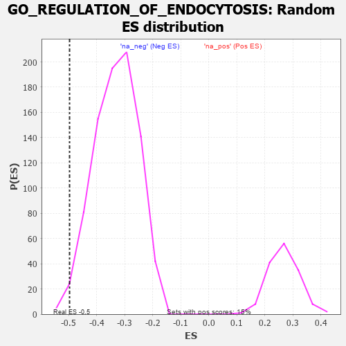

| | | Dataset | 7d |
| Phenotype | NoPhenotypeAvailable |
| Upregulated in class | na_neg |
| GeneSet | GO_REGULATION_OF_ENDOCYTOSIS |
| Enrichment Score (ES) | -0.49715066 |
| Normalized Enrichment Score (NES) | -1.4959086 |
| Nominal p-value | 0.010600707 |
| FDR q-value | 0.1959329 |
| FWER p-Value | 1.0 |
Table: GSEA Results Summary
 Fig 1: Enrichment plot: GO_REGULATION_OF_ENDOCYTOSIS
Fig 1: Enrichment plot: GO_REGULATION_OF_ENDOCYTOSIS
Profile of the Running ES Score & Positions of GeneSet Members on the Rank Ordered List
| PROBE | GENE SYMBOL | GENE_TITLE | RANK IN GENE LIST | RANK METRIC SCORE | RUNNING ES | CORE ENRICHMENT | | 1 | DLL1 | | | 337 | 0.760 | -0.0175 | No |
| 2 | LRP1 | | | 470 | 0.648 | -0.0128 | No |
| 3 | SRC | | | 1128 | 0.459 | -0.0807 | No |
| 4 | FMR1 | | | 1816 | 0.334 | -0.1565 | No |
| 5 | AP2S1 | | | 1846 | 0.329 | -0.1493 | No |
| 6 | SYK | | | 2186 | 0.278 | -0.1830 | No |
| 7 | ANO6 | | | 2339 | 0.255 | -0.1938 | No |
| 8 | BTBD9 | | | 2407 | 0.245 | -0.1942 | No |
| 9 | NUMB | | | 2519 | 0.224 | -0.2008 | No |
| 10 | RAB17 | | | 2950 | 0.157 | -0.2500 | No |
| 11 | MTMR2 | | | 3126 | 0.133 | -0.2677 | No |
| 12 | RAB4B | | | 3157 | 0.129 | -0.2672 | No |
| 13 | SNX17 | | | 3272 | 0.110 | -0.2780 | No |
| 14 | AAK1 | | | 3400 | 0.089 | -0.2911 | No |
| 15 | CBL | | | 3621 | 0.056 | -0.3171 | No |
| 16 | SYT11 | | | 3732 | 0.036 | -0.3298 | No |
| 17 | DGKQ | | | 3856 | 0.020 | -0.3447 | No |
| 18 | TOR1A | | | 4030 | -0.013 | -0.3661 | No |
| 19 | ABL1 | | | 4125 | -0.027 | -0.3771 | No |
| 20 | AP2B1 | | | 4185 | -0.039 | -0.3833 | No |
| 21 | LRRK2 | | | 4467 | -0.087 | -0.4159 | No |
| 22 | HIP1 | | | 4485 | -0.092 | -0.4150 | No |
| 23 | VPS28 | | | 4582 | -0.114 | -0.4234 | No |
| 24 | SYT4 | | | 4590 | -0.116 | -0.4204 | No |
| 25 | RAB21 | | | 4620 | -0.122 | -0.4201 | No |
| 26 | ARF6 | | | 4704 | -0.140 | -0.4260 | No |
| 27 | RAB5C | | | 4752 | -0.149 | -0.4270 | No |
| 28 | CD151 | | | 4791 | -0.156 | -0.4267 | No |
| 29 | CLU | | | 4889 | -0.174 | -0.4332 | No |
| 30 | DRD2 | | | 5088 | -0.221 | -0.4509 | No |
| 31 | ITSN1 | | | 5094 | -0.222 | -0.4442 | No |
| 32 | PICK1 | | | 5265 | -0.263 | -0.4570 | No |
| 33 | MAGI2 | | | 5295 | -0.269 | -0.4517 | No |
| 34 | DLG4 | | | 5388 | -0.293 | -0.4537 | No |
| 35 | SPHK1 | | | 5576 | -0.339 | -0.4662 | No |
| 36 | CD63 | | | 5680 | -0.370 | -0.4670 | No |
| 37 | RAB4A | | | 5919 | -0.441 | -0.4825 | Yes |
| 38 | RAC1 | | | 6036 | -0.484 | -0.4812 | Yes |
| 39 | PPT1 | | | 6038 | -0.485 | -0.4653 | Yes |
| 40 | ROCK1 | | | 6152 | -0.520 | -0.4624 | Yes |
| 41 | INSR | | | 6204 | -0.538 | -0.4511 | Yes |
| 42 | EHD4 | | | 6227 | -0.545 | -0.4359 | Yes |
| 43 | CDC42 | | | 6236 | -0.548 | -0.4188 | Yes |
| 44 | FLOT1 | | | 6276 | -0.564 | -0.4052 | Yes |
| 45 | ABCA2 | | | 6433 | -0.634 | -0.4040 | Yes |
| 46 | WDR54 | | | 6491 | -0.658 | -0.3895 | Yes |
| 47 | CLN3 | | | 6580 | -0.699 | -0.3775 | Yes |
| 48 | ARF1 | | | 6583 | -0.701 | -0.3546 | Yes |
| 49 | SCYL2 | | | 6621 | -0.724 | -0.3354 | Yes |
| 50 | RAB5A | | | 6655 | -0.741 | -0.3151 | Yes |
| 51 | AHI1 | | | 6860 | -0.848 | -0.3129 | Yes |
| 52 | SNX33 | | | 6930 | -0.888 | -0.2923 | Yes |
| 53 | MIB1 | | | 6932 | -0.890 | -0.2631 | Yes |
| 54 | DNM1L | | | 6963 | -0.913 | -0.2368 | Yes |
| 55 | RUFY2 | | | 6986 | -0.927 | -0.2090 | Yes |
| 56 | CD22 | | | 7534 | -1.449 | -0.2303 | Yes |
| 57 | CALM3 | | | 7869 | -2.525 | -0.1892 | Yes |
| 58 | CAV3 | | | 7896 | -2.739 | -0.1021 | Yes |
| 59 | ARRB1 | | | 7935 | -3.377 | 0.0045 | Yes |
Table: GSEA details [plain text format]

Fig 2: GO_REGULATION_OF_ENDOCYTOSIS: Random ES distribution
Gene set null distribution of ES for GO_REGULATION_OF_ENDOCYTOSIS